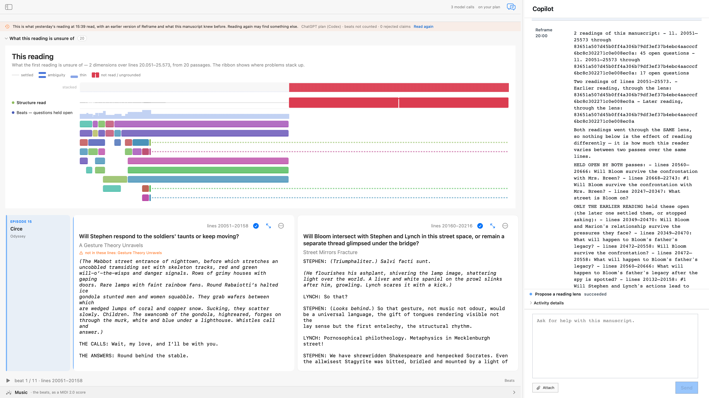

Traceable
Every number and question comes from the two persisted readings and their window documents, never from the transcript.
/readingsEvery reading Reframe performs is kept, with the lens it read through and the lines it covered. This command sets two of them against each other — and separates a question the work leaves open from a question one reading happened to raise.
The Circe chapter of Ulysses had been read twice over the same lines — 45 open questions on one pass, 17 on the other. Both readings had used the same lens, so the report said so first: “nothing below is the effect of reading differently — it is how much this reader varies between two passes over the same lines.” Only then did it hand over the material: three questions held open by both passes, fourteen the later pass dropped, thirty-three it opened, and twelve lines where the two readings cut a beat differently.

Every number and question comes from the two persisted readings and their window documents, never from the transcript.
A same-lens pair is described as the instrument's own variance. Repeated, the report ended: “the readings agree too closely to support a more specific lens.”
It has no capability identity and no capability-activity projection. Its proof is the persisted round and the readings behind it.
Current scenario acceptance → · Historical Ulysses evidence → · Release surface →